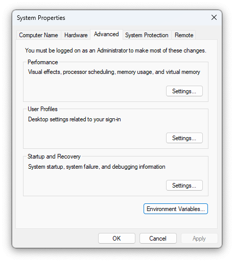
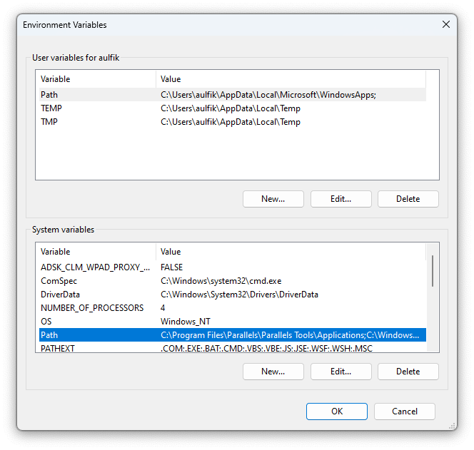
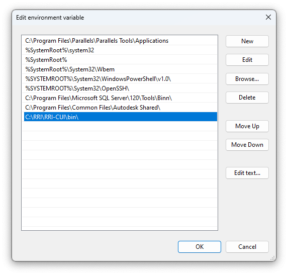

Supplementary Rainfall-Runoff-Inundation Model
Untuk melihat full teks tulisan dapat diakses di digilib.unila.ac.id serta artikel ilmiah [dalam proses].
Aulia, Fikri (2023) ANALISIS BANJIR DENGAN MENGGUNAKAN RAINFALL-RUNOFF-INUNDATION (RRI) MODEL DI DAS SEKAMPUNG, PROVINSI LAMPUNG. Masters thesis, UNIVERSITAS LAMPUNG.
Semoga Membantu! Penerapan Open Science dalam penelitian ini semoga dapat terwujudkan.
Pendahuluan
Pemodelan genangan banjir Rainfall-Runoff-Inundation (RRI) digunakan untuk DAS Sekampung, Provinsi Lampung.
Penggunaan model ini harus tunduk dan patuh pada ketentuan sumber lihat disini. Serta memahami Terms of Use Agreement for the Rainfall-Runoff-Inundation Model Program yang dapat dibaca saat mengunduh program ini.
RRI model program is owned by the International Centre for Water-related Hazard and Risk Management of the Public Works Research Institute (ICHARM-PWRI) in the publication or distribution of calculation results acquired by the use of the RRI model program.
Untuk dapat dengan mudah mengerti tentang hal-hal dalam penguunaan model ini, disarankan untuk membaca dan memahami RRI Manual. Sehingga dapat mengetahui Model Structure Overview, Governing Equations of RRI Model, One-dimensional River Routing Model, River and Slope Water Exchange dan Numerical Scheme dalam model ini.
Panduan Persiapan
Setelah mengunduh program RRI Model, membaca RRI Manual, RRI_Papers dan program RRI yang tersedia. Dalam tulisan ini akan lebih di jelaskan tentang RRI-CUI. Karena model ini ditulis dalam bahasa pemograman Fortran90 maka ada beberapa hal yang harus dipersiapkan dalam penggunaannya.
Seperti disampaikan dalam Manual RRI:
Untuk pengguna Windows dapat mengikuti langkah persiapan sebagai berikut:
1. Lakukan unzip file telah diunduh "RRI_1_4_2_x.zip" dalam direktori kerja, misal C:\
2. Menambahkan PATH dari RRI-CUI folder dengan mengatur Enviroment Variables pada sistem operasi, cara tercepat adalah ketik systempropertiesadvanced atau env di Start menu dan tekan Enter

3. Klik Enviroment Variables, klik Edit untuk memodifikasi PATH ini

4. Menambahkan C:\RRI\RRI-CUI\bin\ (untuk 64 bit) atau C:\RRI\RRI-CUI\bin32\ (untuk 32 bit) pada baris belakang, klik OK. JANGAN MENGHAPUS existing PATH settings
.
Sesungguhnya ntuk pengguna MacOS/linux/Windows secara lengkap dapat diunduh pada Intel® Fortran Compiler mengikuti langkah install dan penggunaan Compiler Setup. Namun akan dijelaskan secara singkat dibawah ini.
Menginstall Intel Fortran pada sistem operasi yang digunakan, hal ini diperlukan untuk menjalankan program RRI yang dikompilasi oleh Intel Fortran.
Untuk pengguna Windows dapat mengikuti langkah berikut:
1. Jalankan RRI/RRI-CUI/etc/w-fcompxe/w_fcompxe_redist_intel64_2013.5.198.msi (untuk 64 bit) atau RRI/RRI-CUI/etc/w-fcompxe/w_fcompxe_redist_ia32_2013.5.198.msi (untuk 32 bit), berkas ini tersedia pada paket unduhan program RRI.
sudo chmod a+rwx l_fortran-compiler_p_2023.2.1.8.sh
./l_fortran-compiler_p_2023.2.1.8.sh
Data
Data Topografi
Data Hujan
Ucapan Terimakasih
Dr. Ofik Taufik Purwadi, S.T., M.T.
Ir. Ahmad Zakaria, M.T., Ph.D.
Dr. Endro P. Wahono, S.T., M.T.
Prof. Dr. Dyah Indriana Kusumastuti, S.T., M.Sc.